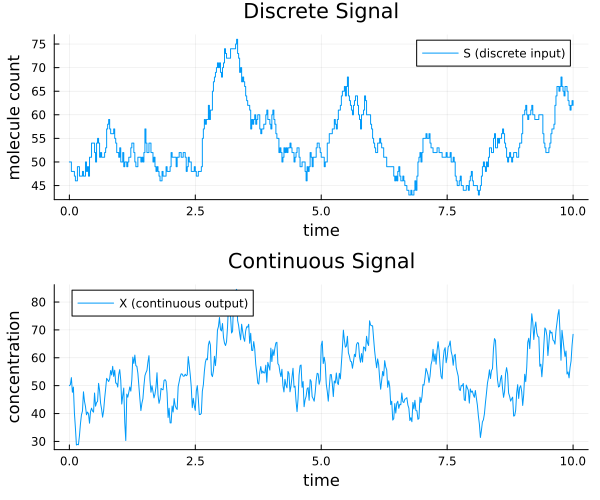
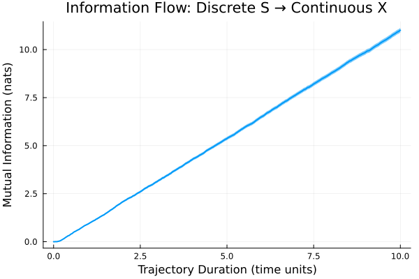
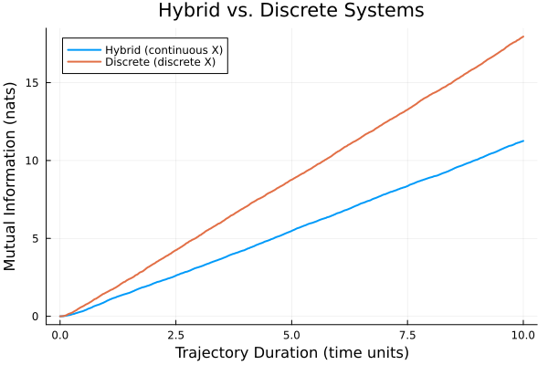

Hybrid Continuous-Discrete System Tutorial
This tutorial analyzes a hybrid stochastic system in which some species change through discrete reactions while others follow stochastic differential equations (SDEs).
The Hybrid Model
The input S undergoes discrete birth-death reactions, while the output X evolves continuously. The dynamics are:
Discrete reactions for S:
Reaction 1: ∅ → S (rate κ) # S production
Reaction 2: S → ∅ (rate λ·S) # S degradationContinuous dynamics for X:
dX/dt = ρ·S - μ·X + noisewhere the noise term represents molecular fluctuations in X.
This motif appears in cellular signaling: a discrete molecular species S, such as a transcription factor, drives a continuous observable X, such as a protein concentration.
Setting Up the System
Define the continuous dynamics with two SDE functions:
import PathWeightSampling as PWS
using StaticArrays
using Plots
using Statistics
using DataFrames
using StochasticDiffEq
# Parameters
κ = 50.0 # S production rate
λ = 1.0 # S degradation rate
ρ = 10.0 # X production rate (per S molecule)
μ = 10.0 # X degradation rate
ps = (κ, λ, ρ, μ)
# Deterministic evolution function for SDE
# u[1] = S, u[2] = X
function det_evolution(u, p, t)
κ, λ, ρ, μ = p
SA[
0.0, # S evolves via discrete jumps only
ρ*u[1] - μ*u[2] # X dynamics: production from S, degradation
]
end
# Noise function for SDE (diffusion term)
function noise_term(u, p, t)
κ, λ, ρ, μ = p
SA[
0.0, # No continuous noise for S
sqrt(2ρ * κ / λ) # Multiplicative noise for X
]
end
# Initial conditions at equilibrium
u0 = SA[κ / λ, κ * ρ / λ / μ]
# Time span
tspan = (0.0, 10.0)
# Create SDE problem
sde_prob = SDEProblem(det_evolution, noise_term, u0, tspan, ps)Defining Discrete Reactions
Specify the discrete jump reactions for S:
# Reaction rates
rates = [κ, λ]
# Reactant stoichiometry
# Reaction 1: ∅ → S (no reactants)
# Reaction 2: S → ∅ (1 S molecule)
rstoich = [
Pair{Int, Int}[], # No reactants for birth
[1 => 1] # 1 molecule of species 1 (S)
]
# Net stoichiometry changes
nstoich = [
[1 => 1], # +1 S
[1 => -1] # -1 S
]
# Create reaction set
reactions = PWS.ReactionSet(rates, rstoich, nstoich, [:S, :X])Creating the Hybrid System
Combine the continuous and discrete dynamics:
# Create hybrid continuous-discrete system
system = PWS.HybridContinuousSystem(
PWS.GillespieDirect(), # Algorithm for discrete jumps
reactions, # Discrete reactions
u0, # Initial condition
tspan, # Time span
0.02, # Observation time step (dt)
sde_prob, # SDE problem for continuous evolution
0.01, # SDE integration time step
:S, # Input species
:X, # Output species
[1 => 1] # Coupling: species 1 (S) affects the SDE
)PathWeightSampling.ContinuousSystem.HybridContinuousSystem{PathWeightSampling.SSA.DirectAggregator{StaticArraysCore.SVector{2, Float64}, PathWeightSampling.SSA.ZeroArray, Nothing}, PathWeightSampling.SSA.ReactionSet{Vector{Float64}, Vector{Vector{Pair{Int64, Int64}}}, Vector{Vector{Pair{Int64, Int64}}}}, StaticArraysCore.SVector{2, Float64}, SciMLBase.SDEProblem{StaticArraysCore.SVector{2, Float64}, Tuple{Float64, Float64}, false, NTuple{4, Float64}, Nothing, SciMLBase.SDEFunction{false, SciMLBase.FullSpecialize, typeof(Main.det_evolution), typeof(Main.noise_term), LinearAlgebra.UniformScaling{Bool}, Nothing, Nothing, Nothing, Nothing, Nothing, Nothing, Nothing, Nothing, Nothing, Nothing, Nothing, typeof(SciMLBase.DEFAULT_OBSERVED), Nothing, Nothing, Nothing}, typeof(Main.noise_term), Base.Pairs{Symbol, Union{}, Nothing, @NamedTuple{}}, Nothing}}(PathWeightSampling.SSA.DirectAggregator{StaticArraysCore.SVector{2, Float64}, PathWeightSampling.SSA.ZeroArray, Nothing}([50.0, 50.0], 0.0, [0.0, 0.0], 0.0, Float64[], BitSet([1, 2]), BitSet([1, 2]), PathWeightSampling.SSA.ZeroArray(), (0.0, Inf), 0.0, 0.0, 1, 0.0, nothing, Random.Xoshiro(0xac5f051c02bf5ae6, 0x7ef7c9039956ef6f, 0x74ff5374897d80ef, 0xa7f74b8eb6dd8106, 0x0a0612547e463508)), PathWeightSampling.SSA.ReactionSet{Vector{Float64}, Vector{Vector{Pair{Int64, Int64}}}, Vector{Vector{Pair{Int64, Int64}}}}([50.0, 1.0], [Pair{Int64, Int64}[], [1 => 1]], [[1 => 1], [1 => -1]], [:S, :X]), [50.0, 50.0], (0.0, 10.0), 0.02, SciMLBase.SDEProblem{StaticArraysCore.SVector{2, Float64}, Tuple{Float64, Float64}, false, NTuple{4, Float64}, Nothing, SciMLBase.SDEFunction{false, SciMLBase.FullSpecialize, typeof(Main.det_evolution), typeof(Main.noise_term), LinearAlgebra.UniformScaling{Bool}, Nothing, Nothing, Nothing, Nothing, Nothing, Nothing, Nothing, Nothing, Nothing, Nothing, Nothing, typeof(SciMLBase.DEFAULT_OBSERVED), Nothing, Nothing, Nothing}, typeof(Main.noise_term), Base.Pairs{Symbol, Union{}, Nothing, @NamedTuple{}}, Nothing}(SciMLBase.SDEFunction{false, SciMLBase.FullSpecialize, typeof(Main.det_evolution), typeof(Main.noise_term), LinearAlgebra.UniformScaling{Bool}, Nothing, Nothing, Nothing, Nothing, Nothing, Nothing, Nothing, Nothing, Nothing, Nothing, Nothing, typeof(SciMLBase.DEFAULT_OBSERVED), Nothing, Nothing, Nothing}(Main.det_evolution, Main.noise_term, LinearAlgebra.UniformScaling{Bool}(true), nothing, nothing, nothing, nothing, nothing, nothing, nothing, nothing, nothing, nothing, nothing, SciMLBase.DEFAULT_OBSERVED, nothing, nothing, nothing), Main.noise_term, [50.0, 50.0], (0.0, 10.0), (50.0, 1.0, 10.0, 10.0), nothing, Base.Pairs{Symbol, Union{}, Nothing, @NamedTuple{}}(), nothing, 0x0000000000000000), 0.01, BitSet([1, 2]), SciMLBase.DiscreteCallback{PathWeightSampling.ContinuousSystem.var"#SSACallback##0#SSACallback##1"{PathWeightSampling.SSA.DirectAggregator{StaticArraysCore.SVector{2, Float64}, PathWeightSampling.SSA.ZeroArray, Nothing}}, PathWeightSampling.ContinuousSystem.var"#SSACallback##2#SSACallback##3"{PathWeightSampling.SSA.DirectAggregator{StaticArraysCore.SVector{2, Float64}, PathWeightSampling.SSA.ZeroArray, Nothing}, PathWeightSampling.SSA.ReactionSet{Vector{Float64}, Vector{Vector{Pair{Int64, Int64}}}, Vector{Vector{Pair{Int64, Int64}}}}, Vector{Pair{Int64, Int64}}}, PathWeightSampling.ContinuousSystem.var"#SSACallback##4#SSACallback##5"{PathWeightSampling.SSA.DirectAggregator{StaticArraysCore.SVector{2, Float64}, PathWeightSampling.SSA.ZeroArray, Nothing}, PathWeightSampling.SSA.ReactionSet{Vector{Float64}, Vector{Vector{Pair{Int64, Int64}}}, Vector{Vector{Pair{Int64, Int64}}}}}, typeof(SciMLBase.FINALIZE_DEFAULT), Nothing, Tuple{}}(PathWeightSampling.ContinuousSystem.var"#SSACallback##0#SSACallback##1"{PathWeightSampling.SSA.DirectAggregator{StaticArraysCore.SVector{2, Float64}, PathWeightSampling.SSA.ZeroArray, Nothing}}(PathWeightSampling.SSA.DirectAggregator{StaticArraysCore.SVector{2, Float64}, PathWeightSampling.SSA.ZeroArray, Nothing}([50.0, 50.0], 0.0, [0.0, 0.0], 0.0, Float64[], BitSet([1, 2]), BitSet([1, 2]), PathWeightSampling.SSA.ZeroArray(), (0.0, Inf), 0.0, 0.0, 1, 0.0, nothing, Random.Xoshiro(0xac5f051c02bf5ae6, 0x7ef7c9039956ef6f, 0x74ff5374897d80ef, 0xa7f74b8eb6dd8106, 0x0a0612547e463508))), PathWeightSampling.ContinuousSystem.var"#SSACallback##2#SSACallback##3"{PathWeightSampling.SSA.DirectAggregator{StaticArraysCore.SVector{2, Float64}, PathWeightSampling.SSA.ZeroArray, Nothing}, PathWeightSampling.SSA.ReactionSet{Vector{Float64}, Vector{Vector{Pair{Int64, Int64}}}, Vector{Vector{Pair{Int64, Int64}}}}, Vector{Pair{Int64, Int64}}}(PathWeightSampling.SSA.DirectAggregator{StaticArraysCore.SVector{2, Float64}, PathWeightSampling.SSA.ZeroArray, Nothing}([50.0, 50.0], 0.0, [0.0, 0.0], 0.0, Float64[], BitSet([1, 2]), BitSet([1, 2]), PathWeightSampling.SSA.ZeroArray(), (0.0, Inf), 0.0, 0.0, 1, 0.0, nothing, Random.Xoshiro(0xac5f051c02bf5ae6, 0x7ef7c9039956ef6f, 0x74ff5374897d80ef, 0xa7f74b8eb6dd8106, 0x0a0612547e463508)), PathWeightSampling.SSA.ReactionSet{Vector{Float64}, Vector{Vector{Pair{Int64, Int64}}}, Vector{Vector{Pair{Int64, Int64}}}}([50.0, 1.0], [Pair{Int64, Int64}[], [1 => 1]], [[1 => 1], [1 => -1]], [:S, :X]), [1 => 1]), PathWeightSampling.ContinuousSystem.var"#SSACallback##4#SSACallback##5"{PathWeightSampling.SSA.DirectAggregator{StaticArraysCore.SVector{2, Float64}, PathWeightSampling.SSA.ZeroArray, Nothing}, PathWeightSampling.SSA.ReactionSet{Vector{Float64}, Vector{Vector{Pair{Int64, Int64}}}, Vector{Vector{Pair{Int64, Int64}}}}}(PathWeightSampling.SSA.DirectAggregator{StaticArraysCore.SVector{2, Float64}, PathWeightSampling.SSA.ZeroArray, Nothing}([50.0, 50.0], 0.0, [0.0, 0.0], 0.0, Float64[], BitSet([1, 2]), BitSet([1, 2]), PathWeightSampling.SSA.ZeroArray(), (0.0, Inf), 0.0, 0.0, 1, 0.0, nothing, Random.Xoshiro(0xac5f051c02bf5ae6, 0x7ef7c9039956ef6f, 0x74ff5374897d80ef, 0xa7f74b8eb6dd8106, 0x0a0612547e463508)), PathWeightSampling.SSA.ReactionSet{Vector{Float64}, Vector{Vector{Pair{Int64, Int64}}}, Vector{Vector{Pair{Int64, Int64}}}}([50.0, 1.0], [Pair{Int64, Int64}[], [1 => 1]], [[1 => 1], [1 => -1]], [:S, :X])), SciMLBase.FINALIZE_DEFAULT, Bool[0, 0], nothing, ()), [1 => 1])Generating and Visualizing Trajectories
Generate and plot a sample configuration:
# Generate a configuration
conf = PWS.generate_configuration(system)
# Plot both species
times = conf.t
p1 = plot(times, conf[1, :],
label="S (discrete input)",
xlabel="time",
ylabel="molecule count",
title="Discrete Signal",
linetype=:steppost)
p2 = plot(times, conf[2, :],
label="X (continuous output)",
xlabel="time",
ylabel="concentration",
title="Continuous Signal")
plot(p1, p2, layout=(2, 1), size=(600, 500))
S jumps between integer copy numbers, while X varies continuously and responds to changes in S. The SDE's diffusion term adds fluctuations to X.
Equilibrium Statistics
Compare statistics from a long trajectory with their equilibrium predictions:
# Theoretical expectations at equilibrium
mean_S_theory = κ / λ
var_S_theory = κ / λ
mean_X_theory = ρ * κ / λ / μ
var_X_theory = (1 / (1 + λ/μ) + ρ / μ) * κ / λ
# Empirical statistics from long trajectory
system_long = PWS.HybridContinuousSystem(
PWS.GillespieDirect(),
reactions,
u0,
(0.0, 1000.0), # Long time for equilibration
0.01,
sde_prob,
0.01,
:S,
:X,
[1 => 1]
)
conf_long = PWS.generate_configuration(system_long)
println("S statistics:")
println(" Mean (theory): $(mean_S_theory), empirical: $(mean(conf_long[1, :]))")
println(" Var (theory): $(var_S_theory), empirical: $(var(conf_long[1, :]))")
println("\nX statistics:")
println(" Mean (theory): $(mean_X_theory), empirical: $(mean(conf_long[2, :]))")
println(" Var (theory): $(var_X_theory), empirical: $(var(conf_long[2, :]))")S statistics:
Mean (theory): 50.0, empirical: 53.14985014985015
Var (theory): 50.0, empirical: 25.717522477522486
X statistics:
Mean (theory): 50.0, empirical: 52.89446835320158
Var (theory): 95.45454545454545, empirical: 64.29046232717374Computing Mutual Information
Estimate the mutual information from S to X using sequential Monte Carlo:
# Compute mutual information using SMC algorithm
result = PWS.mutual_information(
system,
PWS.SMCEstimate(128), # Use 128 particles
num_samples=1000, # Take 1000 Monte Carlo samples
progress=false
)
# Aggregate results by time
sem(x) = std(x) / sqrt(length(x))
df = combine(
groupby(result.result, :time),
:MutualInformation => mean => :MI,
:MutualInformation => sem => :SEM
)
# Plot mutual information vs trajectory duration
plot(
df.time,
df.MI,
ribbon=df.SEM,
xlabel="Trajectory Duration (time units)",
ylabel="Mutual Information (nats)",
title="Information Flow: Discrete S → Continuous X",
legend=false,
linewidth=2
)
Information Transmission Rate
Estimate the information transmission rate from the approximately linear region and compare it with the analytical prediction:
# Estimate transmission rate from linear region
idx_start = findfirst(df.time .>= 2.0)
idx_end = findfirst(df.time .>= 8.0)
if !isnothing(idx_start) && !isnothing(idx_end)
Δt = df.time[idx_end] - df.time[idx_start]
ΔMI = df.MI[idx_end] - df.MI[idx_start]
rate_estimate = ΔMI / Δt
# Analytical rate from Tostevin et al. (2009)
rate_analytical = λ / 2 * (sqrt(1 + ρ / λ) - 1)
println("Information transmission rate:")
println(" Estimated: $(round(rate_estimate, digits=4)) nats/time")
println(" Analytical: $(round(rate_analytical, digits=4)) nats/time")
println(" Relative error: $(round(abs(rate_estimate - rate_analytical) / rate_analytical * 100, digits=2))%")
endInformation transmission rate:
Estimated: 1.1099 nats/time
Analytical: 1.1583 nats/time
Relative error: 4.18%The comparison checks the numerical estimate against an independent analytical result.
Hybrid-System Parameters
Coupling Between Discrete and Continuous Dynamics
The [1 => 1] argument in HybridContinuousSystem couples species 1 (S) to the continuous dynamics. Discrete jumps in S therefore affect the SDE drift term, and X depends on the current discrete state of S.
Time Step Selection
The constructor uses two time steps:
0.02is the observation interval: how often the system state is recorded.0.01is the internal integration step for the SDE solver.
The SDE step should be smaller than the observation interval to resolve the continuous dynamics between recorded states.
Comparison with Pure Discrete Systems
For comparison, construct a purely discrete version of the same system:
# Create pure discrete system for comparison
discrete_reactions = PWS.ReactionSet(
[κ, λ, ρ, 10.0], # rates
[Pair{Int, Int}[], [1=>1], [1=>1], [2=>1]], # reactants
[[1=>1], [1=>-1], [2=>1], [2=>-1]], # net stoich
[:S, :X]
)
discrete_system = PWS.MarkovJumpSystem(
PWS.GillespieDirect(),
discrete_reactions,
round.(Int, u0),
tspan,
:S,
:X,
0.02
)
result_discrete = PWS.mutual_information(
discrete_system,
PWS.SMCEstimate(128),
num_samples=1000,
progress=false
)
df_discrete = combine(
groupby(result_discrete.result, :time),
:MutualInformation => mean => :MI
)
# Plot comparison
plot(df.time, df.MI, label="Hybrid (continuous X)", linewidth=2)
plot!(df_discrete.time, df_discrete.MI, label="Discrete (discrete X)", linewidth=2)
xlabel!("Trajectory Duration (time units)")
ylabel!("Mutual Information (nats)")
title!("Hybrid vs. Discrete Systems")
Analytical Predictions for Information Rates
For linear gene-expression systems, exact formulas exist for the steady-state information transmission rate (Tostevin & ten Wolde 2009; Reinhardt et al. 2025; Moor et al. 2025). The following code compares these predictions with the numerical results:
# Compute information transmission rates from linear regions
idx_start_hybrid = findfirst(df.time .>= 2.0)
idx_end_hybrid = findfirst(df.time .>= 8.0)
if !isnothing(idx_start_hybrid) && !isnothing(idx_end_hybrid)
Δt = df.time[idx_end_hybrid] - df.time[idx_start_hybrid]
ΔMI_hybrid = df.MI[idx_end_hybrid] - df.MI[idx_start_hybrid]
rate_hybrid_computed = ΔMI_hybrid / Δt
# Analytical formula for Gaussian (state-based) system
# Tostevin & ten Wolde (2009): R = (λ/2)(√(1 + ρ/λ) - 1)
rate_hybrid_analytical = (λ / 2) * (sqrt(1 + ρ / λ) - 1)
println("Hybrid System (Continuous X):")
println(" Computed rate: $(round(rate_hybrid_computed, digits=4)) nats/time")
println(" Analytical (Gaussian): $(round(rate_hybrid_analytical, digits=4)) nats/time")
println(" Relative difference: $(round(abs(rate_hybrid_computed - rate_hybrid_analytical) / rate_hybrid_analytical * 100, digits=2))%")
endHybrid System (Continuous X):
Computed rate: 1.1099 nats/time
Analytical (Gaussian): 1.1583 nats/time
Relative difference: 4.18%# Discrete system rate
idx_start_discrete = findfirst(df_discrete.time .>= 2.0)
idx_end_discrete = findfirst(df_discrete.time .>= 8.0)
if !isnothing(idx_start_discrete) && !isnothing(idx_end_discrete)
Δt = df_discrete.time[idx_end_discrete] - df_discrete.time[idx_start_discrete]
ΔMI_discrete = df_discrete.MI[idx_end_discrete] - df_discrete.MI[idx_start_discrete]
rate_discrete_computed = ΔMI_discrete / Δt
# Analytical formula for discrete (reaction-based) system
# Moor et al. (2025): R = (λ/2)(√(1 + 2ρ/λ) - 1)
rate_discrete_analytical = (λ / 2) * (sqrt(1 + 2ρ / λ) - 1)
println("\nDiscrete System (Discrete X):")
println(" Computed rate: $(round(rate_discrete_computed, digits=4)) nats/time")
println(" Analytical (Discrete): $(round(rate_discrete_analytical, digits=4)) nats/time")
println(" Relative difference: $(round(abs(rate_discrete_computed - rate_discrete_analytical) / rate_discrete_analytical * 100, digits=2))%")
end
Discrete System (Discrete X):
Computed rate: 1.8271 nats/time
Analytical (Discrete): 1.7913 nats/time
Relative difference: 2.0%# Show the theoretical difference
if !isnothing(idx_start_hybrid) && !isnothing(idx_start_discrete)
rate_hybrid_analytical = (λ / 2) * (sqrt(1 + ρ / λ) - 1)
rate_discrete_analytical = (λ / 2) * (sqrt(1 + 2ρ / λ) - 1)
println("\nTheoretical Comparison:")
println(" Gaussian (state-based) rate: $(round(rate_hybrid_analytical, digits=4)) nats/time")
println(" Discrete (reaction-based) rate: $(round(rate_discrete_analytical, digits=4)) nats/time")
println(" Ratio (discrete/Gaussian): $(round(rate_discrete_analytical / rate_hybrid_analytical, digits=3))")
println(" Discrete system transmits $(round((rate_discrete_analytical / rate_hybrid_analytical - 1) * 100, digits=1))% more information")
end
Theoretical Comparison:
Gaussian (state-based) rate: 1.1583 nats/time
Discrete (reaction-based) rate: 1.7913 nats/time
Ratio (discrete/Gaussian): 1.546
Discrete system transmits 54.6% more informationThe analytical rates are:
- Gaussian (state-based): $R = \frac{\lambda}{2}\left(\sqrt{1 + \frac{\rho}{\lambda}} - 1\right)$
- Discrete (reaction-based): $R = \frac{\lambda}{2}\left(\sqrt{1 + \frac{2\rho}{\lambda}} - 1\right)$
The reaction-based system has the higher rate. Its trajectories retain reaction-level detail that is lost when only the state is observed, which accounts for the factor of 2 inside the square root.
Why Reaction-Based and State-Based Rates Differ
Both descriptions represent the same chemical process, but they do not retain the same information about it. Observing discrete reaction events is not equivalent to observing continuous concentration changes.
Reaction-Based and State-Based Trajectories
The important distinction is which events the trajectory records, rather than whether its values are discrete or continuous:
- A reaction-based trajectory records which reactions fire and when.
- A state-based trajectory records only aggregate copy numbers or concentrations. Different reactions affecting the same species can produce indistinguishable changes.
Collapsing reaction events into species-level observations loses information. Moor et al. (2025) summarize this as "reaction-based information can never be smaller than the state-based one," consistent with the data processing inequality.
Information Lost in the Continuous Description
In the purely discrete system, every S and X production and degradation event is recorded. In the hybrid system, S events remain discrete, but X is represented by a continuous concentration driven by diffusive noise. The continuous trajectory does not identify individual X production and degradation events, even if it reproduces the mean and variance of the copy number.
This loss remains when a Gaussian approximation describes the state fluctuations well. Matching the average behavior does not recover the missing reaction events.
Connection to the Linear Noise Approximation
The standard state-based Linear Noise Approximation (LNA), combined with Gaussian channel theory, can therefore give different information-capacity predictions from exact Markov-jump calculations. Moor et al. attribute this difference to the loss of reaction identity: a linear combination of Gaussian processes is another Gaussian process, so combining reaction channels into aggregate noise removes information about which reactions fired.
For a derivation and discussion of the biological implications, see Moor, A.-L., Tjalma, A., Reinhardt, M., ten Wolde, P. R., & Zechner, C. (2025), State- versus Reaction-Based Information Processing in Biochemical Networks.
The paper also introduces a reaction-based LNA that retains channel identity. In this setting, the choice of trajectory description changes the computed information capacity; it is not just a matter of modeling convenience.
PathWeightSampling.jl supports both discrete (MarkovJumpSystem) and hybrid (HybridContinuousSystem) systems, so the two descriptions can be compared directly.
References
Tostevin, F., & ten Wolde, P. R. (2009). Mutual information between input and output trajectories of biochemical networks. Physical Review Letters, 102(21), 218101. https://doi.org/10.1103/PhysRevLett.102.218101
Reinhardt, M., Tjalma, A. J., Moor, A.-L., Zechner, C., & ten Wolde, P. R. (2025). Mutual Information Rate – Linear Noise Approximation and Exact Computation. arXiv preprint arXiv:2508.21220. https://arxiv.org/abs/2508.21220
Moor, A.-L., Tjalma, A., Reinhardt, M., ten Wolde, P. R., & Zechner, C. (2025). State- versus Reaction-Based Information Processing in Biochemical Networks. arXiv preprint arXiv:2505.13373. https://arxiv.org/abs/2505.13373